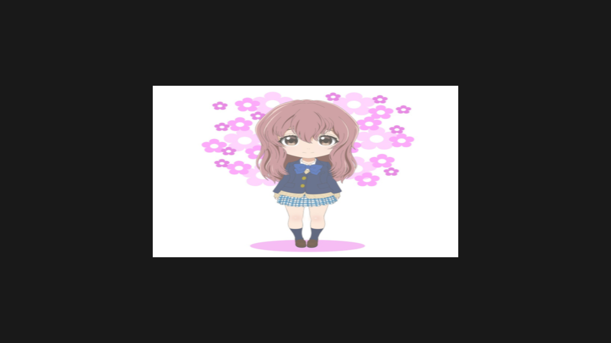

Textured Quad
In this tutorial, you'll render a textured quad using an index buffer, a texture loaded from file, and a sampler. This introduces resource binding — connecting GPU resources like textures and samplers to shaders through resource layouts and tables.
Overview
This tutorial covers:
- Using an index buffer to share vertices between triangles
- Loading a texture from an image file
- Creating a sampler with filtering and address modes
- Defining a resource layout and resource table to bind resources to shaders
- Using
BindingHelperfor cross-backend resource binding
The Renderer Class
Create the file Renderers/TexturedQuadRenderer.cs:
namespace ZenithTutorials.Renderers;
internal unsafe class TexturedQuadRenderer : IRenderer
{
private const string ShaderSource = """
struct VSInput
{
float3 Position : POSITION0;
float2 TexCoord : TEXCOORD0;
};
struct PSInput
{
float4 Position : SV_POSITION;
float2 TexCoord : TEXCOORD;
};
Texture2D texture;
SamplerState sampler;
PSInput VSMain(VSInput input)
{
PSInput output;
output.Position = float4(input.Position, 1.0);
output.TexCoord = input.TexCoord;
return output;
}
float4 PSMain(PSInput input) : SV_TARGET
{
return texture.Sample(sampler, input.TexCoord);
}
""";
private readonly Buffer vertexBuffer;
private readonly Buffer indexBuffer;
private readonly Texture texture;
private readonly Sampler sampler;
private readonly ResourceLayout resourceLayout;
private readonly ResourceTable resourceTable;
private readonly GraphicsPipeline pipeline;
public TexturedQuadRenderer()
{
Vertex[] vertices =
[
new(new(-0.5f, 0.5f, 0.0f), new(0.0f, 0.0f)),
new(new( 0.5f, 0.5f, 0.0f), new(1.0f, 0.0f)),
new(new( 0.5f, -0.5f, 0.0f), new(1.0f, 1.0f)),
new(new(-0.5f, -0.5f, 0.0f), new(0.0f, 1.0f))
];
uint[] indices = [0, 1, 2, 0, 2, 3];
vertexBuffer = App.Context.CreateBuffer(new()
{
SizeInBytes = (uint)(sizeof(Vertex) * vertices.Length),
StrideInBytes = (uint)sizeof(Vertex),
Flags = BufferUsageFlags.Vertex | BufferUsageFlags.MapWrite
});
vertexBuffer.Upload(vertices, 0);
indexBuffer = App.Context.CreateBuffer(new()
{
SizeInBytes = (uint)(sizeof(uint) * indices.Length),
StrideInBytes = sizeof(uint),
Flags = BufferUsageFlags.Index | BufferUsageFlags.MapWrite
});
indexBuffer.Upload(indices, 0);
texture = App.Context.LoadTextureFromFile(Path.Combine(AppContext.BaseDirectory, "Assets", "shoko.png"), generateMipMaps: true);
sampler = App.Context.CreateSampler(new()
{
U = AddressMode.Clamp,
V = AddressMode.Clamp,
W = AddressMode.Clamp,
Filter = Filter.MinLinearMagLinearMipLinear,
MaxLod = uint.MaxValue
});
resourceLayout = App.Context.CreateResourceLayout(new()
{
Bindings = BindingHelper.Bindings
(
new() { Type = ResourceType.Texture, Count = 1, StageFlags = ShaderStageFlags.Pixel },
new() { Type = ResourceType.Sampler, Count = 1, StageFlags = ShaderStageFlags.Pixel }
)
});
resourceTable = App.Context.CreateResourceTable(new()
{
Layout = resourceLayout,
Resources = [texture, sampler]
});
InputLayout inputLayout = new();
inputLayout.Add(new() { Format = ElementFormat.Float3, Semantic = ElementSemantic.Position });
inputLayout.Add(new() { Format = ElementFormat.Float2, Semantic = ElementSemantic.TexCoord });
using Shader vertexShader = App.Context.LoadShaderFromSource(ShaderSource, "VSMain", ShaderStageFlags.Vertex);
using Shader pixelShader = App.Context.LoadShaderFromSource(ShaderSource, "PSMain", ShaderStageFlags.Pixel);
pipeline = App.Context.CreateGraphicsPipeline(new()
{
RenderStates = new()
{
RasterizerState = RasterizerStates.CullNone,
DepthStencilState = DepthStencilStates.Default,
BlendState = BlendStates.Opaque
},
Vertex = vertexShader,
Pixel = pixelShader,
ResourceLayout = resourceLayout,
InputLayouts = [inputLayout],
PrimitiveTopology = PrimitiveTopology.TriangleList,
Output = App.FrameBuffer.Output
});
}
public void Update(double deltaTime)
{
}
public void Render()
{
CommandBuffer commandBuffer = App.Context.Graphics.CommandBuffer();
commandBuffer.BeginRenderPass(App.FrameBuffer, new()
{
ColorValues = [new(0.1f, 0.1f, 0.1f, 1.0f)],
Depth = 1.0f,
Stencil = 0,
Flags = ClearFlags.All
}, resourceTable);
commandBuffer.SetPipeline(pipeline);
commandBuffer.SetResourceTable(resourceTable);
commandBuffer.SetVertexBuffer(vertexBuffer, 0, 0);
commandBuffer.SetIndexBuffer(indexBuffer, 0, IndexFormat.UInt32);
commandBuffer.DrawIndexed(6, 1, 0, 0, 0);
commandBuffer.EndRenderPass();
commandBuffer.Submit(waitForCompletion: true);
}
public void Resize(uint width, uint height)
{
}
public void Dispose()
{
pipeline.Dispose();
resourceTable.Dispose();
resourceLayout.Dispose();
sampler.Dispose();
texture.Dispose();
indexBuffer.Dispose();
vertexBuffer.Dispose();
}
}
[StructLayout(LayoutKind.Sequential)]
file struct Vertex(Vector3 position, Vector2 texCoord)
{
public Vector3 Position = position;
public Vector2 TexCoord = texCoord;
}
Running the Tutorial
Run the application and select 2. Textured Quad from the menu:
dotnet run
Result

Code Breakdown
Shader
The pixel shader samples a texture using UV coordinates:
private const string ShaderSource = """
struct VSInput
{
float3 Position : POSITION0;
float2 TexCoord : TEXCOORD0;
};
struct PSInput
{
float4 Position : SV_POSITION;
float2 TexCoord : TEXCOORD;
};
Texture2D texture;
SamplerState sampler;
PSInput VSMain(VSInput input)
{
PSInput output;
output.Position = float4(input.Position, 1.0);
output.TexCoord = input.TexCoord;
return output;
}
float4 PSMain(PSInput input) : SV_TARGET
{
return texture.Sample(sampler, input.TexCoord);
}
""";
Texture2D and SamplerState are declared as global resources. The pixel shader uses texture.Sample(sampler, uv) to fetch filtered texel colors.
Index Buffer
Instead of duplicating vertices, an index buffer references shared vertices:
Vertex[] vertices =
[
new(new(-0.5f, 0.5f, 0.0f), new(0.0f, 0.0f)),
new(new( 0.5f, 0.5f, 0.0f), new(1.0f, 0.0f)),
new(new( 0.5f, -0.5f, 0.0f), new(1.0f, 1.0f)),
new(new(-0.5f, -0.5f, 0.0f), new(0.0f, 1.0f))
];
uint[] indices = [0, 1, 2, 0, 2, 3];
Two triangles (indices 0,1,2 and 0,2,3) share vertices 0 and 2 to form the quad.
Texture and Sampler
The texture is loaded from a file with mipmaps generated automatically:
texture = App.Context.LoadTextureFromFile(Path.Combine(AppContext.BaseDirectory, "Assets", "shoko.png"), generateMipMaps: true);
sampler = App.Context.CreateSampler(new()
{
U = AddressMode.Clamp,
V = AddressMode.Clamp,
W = AddressMode.Clamp,
Filter = Filter.MinLinearMagLinearMipLinear,
MaxLod = uint.MaxValue
});
| Property | Value | Purpose |
|---|---|---|
AddressMode.Clamp |
U, V, W | Clamp UVs to [0,1] — no texture wrapping |
Filter |
MinLinearMagLinearMipLinear |
Trilinear filtering for smooth sampling |
MaxLod |
uint.MaxValue |
Allow all mipmap levels |
Resource Binding
Resources are exposed to shaders through a layout and table:
resourceLayout = App.Context.CreateResourceLayout(new()
{
Bindings = BindingHelper.Bindings
(
new() { Type = ResourceType.Texture, Count = 1, StageFlags = ShaderStageFlags.Pixel },
new() { Type = ResourceType.Sampler, Count = 1, StageFlags = ShaderStageFlags.Pixel }
)
});
resourceTable = App.Context.CreateResourceTable(new()
{
Layout = resourceLayout,
Resources = [texture, sampler]
});
BindingHelper.Bindings assigns the correct binding indices per backend. StageFlags controls which shader stages can access each resource.
Rendering
The render pass now receives the resourceTable, and uses indexed drawing:
commandBuffer.BeginRenderPass(App.FrameBuffer, new()
{
ColorValues = [new(0.1f, 0.1f, 0.1f, 1.0f)],
Depth = 1.0f,
Stencil = 0,
Flags = ClearFlags.All
}, resourceTable);
commandBuffer.SetPipeline(pipeline);
commandBuffer.SetResourceTable(resourceTable);
commandBuffer.SetVertexBuffer(vertexBuffer, 0, 0);
commandBuffer.SetIndexBuffer(indexBuffer, 0, IndexFormat.UInt32);
commandBuffer.DrawIndexed(6, 1, 0, 0, 0);
DrawIndexed(6, 1, 0, 0, 0) draws 6 indices (2 triangles), 1 instance.
Next Steps
- Spinning Cube - Add 3D transformations with constant buffers
Source Code
Tip
View the complete source code on GitHub: TexturedQuadRenderer.cs